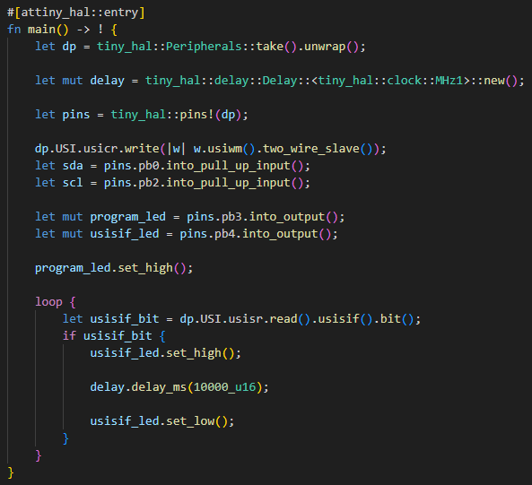
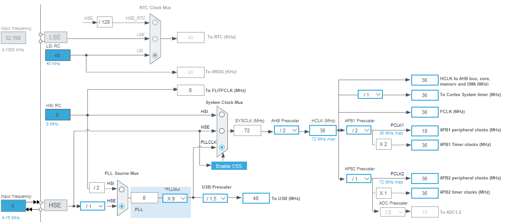
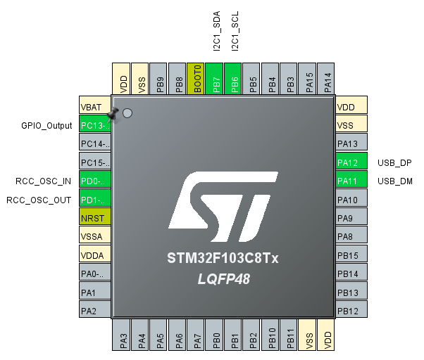
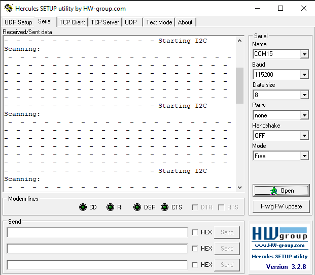
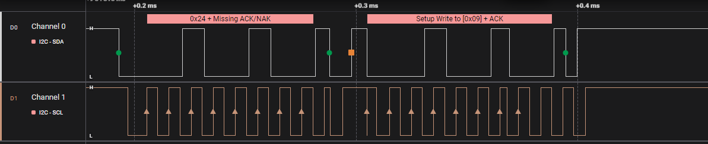

Project Timeline
After doing research and establishing a schedule for the project, these were the milestones/highlights of the project.
-
Successfully tested I2C communication on the ATtiny85 using the C language.
Setting up the ATtiny85 as the I2C master and connecting an Arduino Uno to the bus as a slave, I tested the transfer of data by having the slave send data over the bus and having the master confirm it was the right data.
-
Successfully tested V-USB using the ATtiny85
V-USB is known as being challenging and flimsy. The first challenge was getting the proper clock frequency for the ATtiny85. Since I did not have a crystal oscillator, I related on the internal clock, which I set to run at 12 MHz using the fuse bits, which is the lowest clock frquency to allow V-USB to work. The 3.6V zeiner diodes connected to the data lines proved to be crucial for this to work. The circuit used can be seen below.
V-USB circuit:

-
Attempted avr-hal implementation of I2C communications
Using WSL, I create a rust project and was able to use the avr-hal library to test simple functionalities such as register read/write operations, changes to pin modes, etc. I encountered a major road block when trying to use I2C. I was able to do some register-level I2C implementation such as detecting start conditions, but due to a lack of support from the library, I2C bitbanging would have been required. Due to the complexity of bitbanging, paired with the fact that the library's documentation was not reliable, I decided not to move forward with this idea.
USISIF bit detect (very basic):
 -
Switch to STM32F103 (Bluepill)
I decided to continue the project with an STM32 MCU as it provides a better usb interface and an I2C HAL that is a lot more documented. The pinout was easily setup in STM32CubeIDE and the clock settings were set by following the provided documentation. I used the external oscillator (8MHz) of the bluepill board.
Clock Settings:
Pinout Configuration:
 -
Successfully tested USB connection with STM32f103
I was able to successfully connect my STM32F103 to my PC using the DP and DM pins of the STM32f103. I used the Hercules utility to monitor the COM port as can be seen below.
Hercules COM port reading:
 -
Failed to have a successful I2C connection with STM32f103
For the I2C bus circuit, I followed the diagram on page 69 of the stm32f103c8 datasheet. The I2C bus was thoroughly debugged for a long time, because although the MCU was able to write to the bus, it was never able to successfully detect an ACK. Many different solutions were tried, but the problem seems to be with the HAL of the MCU. When performing an I2C bus scan (7 bit addresses), the MCU would always end the packet with a start condition, which seemed to cause problems.
Logic Analyzer waveform:
